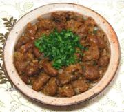

|
Chicken Gizzard, Heart AppetizerLebanon - Bearsheart mi'leeyeh | ||||
| Serves: Effort: Sched: DoAhead: |
4 app ** 1=1/4 hrs Yes |
This fine, meaty appetizer from Lebanon is easy to make and satisfyingly flavorful - and it goes well with Arak (see Note-4). It can be made a couple days in advance and refrigerated. | |||
|
|
1 8 2 ------ 1/2 1/4 1/2 ------ 2 1/2 3 ------ |
# oz cl --- t t t --- T c T --- |
Gizzards & Hearts (1) Onions Garlic -- Seasonings Salt Pepper, black Mixed Spice (2) ---------- Ghee (3) Water Lemon Juice -- Garnish Parsley |
Prep - (15 min)
|